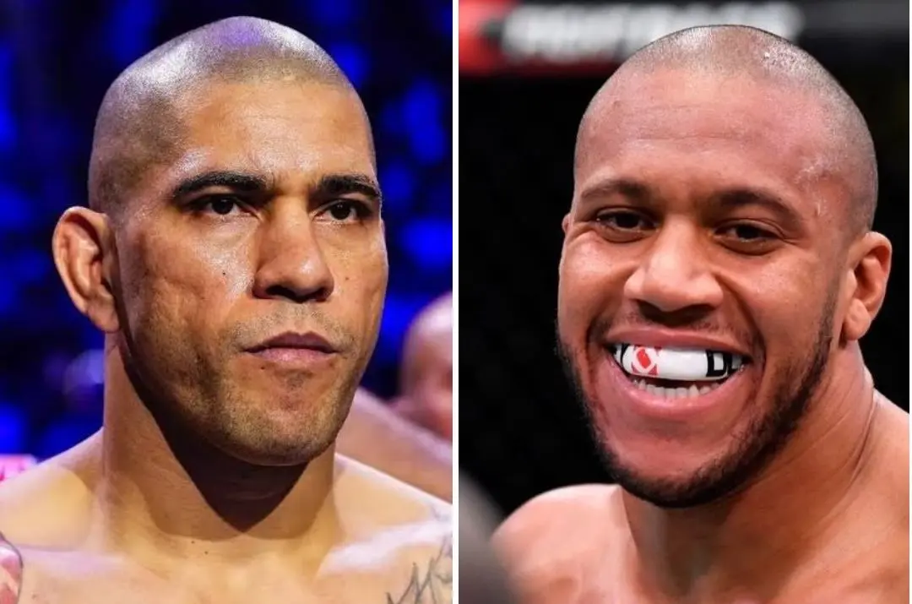

Masvidal aposta em vitória "com dificuldade" de Alex Poatan no UFC Casa Branca
Publicado em:
Faltando menos de um mês para a disputa entre Alex Pereira e Ciryl Gane, pelo cinturão interino dos pesos-pesados , no 'co-main event' do UFC Casa Branca, as análises e palpites sobre o confronto parecem se multiplicar a cada dia entre os membros da comunidade do MMA. Quem também resolveu dar o seu 'pitaco' foi o americano Jorge Masvidal, ex-campeão 'BMF' do Ultimate, que colocou suas fichas em 'Poatan'.

"Eu acho que ele (Poatan) vai ter dificuldade nos dois primeiros rounds. Acho que ele termina com a luta no final. Eu acho que o trabalho de pés de Gane, aqueles dois primeiros rounds vão ser muito, muito difíceis para superar aquela defesa. Ele mantém a distância. Ele mantém você a um braço de distância enquanto ele está se afastando", analisou Jorge Masvidal
Clique aqui para ver as referências da notícia
UOL notíciasPortal Super Lutas